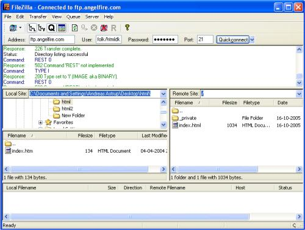

Bis jetzt konnten ja nur Sie selber Ihre Seiten anschauen. Jetzt ist die Zeit gekommen, dass auch der Rest der Welt Ihre Meisterwerke betrachten kann.
Ja, die Welt ist es – und Sie werden es auch bald sein. Um Ihre Webseite ins Internet zu bekommen, benötigen Sie Serverspeicherplatz (sog. Webspace) und ein kostenloses FTP-Programm.
Es ist durchaus möglich, dass Ihnen Ihr Internetanbieter (Provider) etwas an Webspace zur Verfügung stellt. Die Adresse könnte dann etwa in dieser Art und Weise lauten: http://home.anbieter.de/~benutzername. Evtl. müssen Sie diesen auch erst noch aktivieren. Ob dieses auf Sie zutrifft, erfahren Sie in den Unterlagen, die Sie von Ihrem Anbieter erhalten haben oder auf dessen Hilfeseiten im Internet.
Eine andere Möglichkeit wäre, sich im Internet bei Anbietern von kostenlosem Webspace anzumelden. In der gleichen Art und Weise, wie Sie sich für eine kostenlose eMail-Adresse bei WEB.de oder GMX anmelden, können Sie dies auch für kostenlosen Webspeicherplatz tun. Einige Unternehmen bieten solch einen Service an – so z.B. Angelfire (melden Sie sich an und wählen kostenlose Mitgliedschaft) – es dauert nur ein paar Minuten, sich anzumelden.
Um FTP-Zugang zu einem Server zu erhalten, müssen Sie dessen Namen (Hostname) wissen (z.B. ftp.angelfire.com) und Ihren Loginnamen und Passwort bereit halten.
Um auf den Server zuzugreifen und Ihre Seiten hochzuladen, benötigen Sie ein FTP-Programm. Möglicherweise haben Sie noch keines, aber zum Glück gibt es auch hier kostenlose Software zum herunterladen.
Es gibt viele verschiedene FTP-Programme. Eines der besseren ist FileZilla, welches komplett kostenlos ist. Sie können Sie FileZilla unter filezilla.sourceforge.net herunterladen.
Nachfolgend beschrieben finden Sie, wie Sie mit Hilfe von FileZilla Ihre Seiten auf den kostenlosen Webspace bei Angelfire laden. Das Vorgehen ist aber bei anderen Providern und FTP-Programmen, mehr oder weniger, das gleiche.
Starten Sie das FTP-Programm, während sie mit dem Internet verbunden sind. Geben Sie bei “Address” den Servernamen (ftp.angelfire.com) ein, bei “User” Ihren Benutzernamen und bei “Password” Ihr Passwort. Dann klicken Sie auf “Connect” (engl. für “verbinden”). Nun sollten Sie eine Verbindung zum Server hergestellt haben. Auf der einen Seite des FTP-Programmes sehen Sie den Inhalt der Festplatte Ihres Computers (“Local Site”). Auf der anderen sehen Sie die Inhalte auf dem Server (“Remote Site”):

Suchen Sie nun Ihre HTML- und Bild-Dateien auf Ihrem Computer (“Local Site”) und übertragen Sie diese mit Doppelklick auf den Server (“Remote Site”). Jetzt kann die ganze Welt Ihre Arbeit anschauen! (z.B. unter der Adresse http://www.angelfire.com/folk/htmlnet/page1.htm).
Wenn Sie eine Ihrer Seiten in “index.htm” (oder “index.html”) umbenennen, wird diese automatisch die Startseite. Wenn man z.B. nur http://www.angelfire.com/folk/htmlnet (ohne Dateinamen) eingibt, wird in Wirklichkeit die Seite http://www.angelfire.com/folk/htmlnet/index.htm geöffnet.
Auf längere Sicht könnte es vielleicht eine gute Idee sein, wenn Sie sich Ihren eigenen Domainnamen zulegen (z.B. www.ihr-name.de oder www.mein-hobby.de) und somit lange und komplizierte Adressen vermeiden, die von Ihrem Internetanbieter oder dem Anbieter des kostenlosen Speicherplatzes vorgegeben werden. Ob Ihre Wunschdomain noch frei ist, können Sie z.B. bei DENIC, der zentralen Registrierungsstelle für .de-Domainnamen, nachschauen. Eine Bestellung des gewünschten Domainnamens können Sie dann bei einem Webhoster Ihrer Wahl vornehmen.